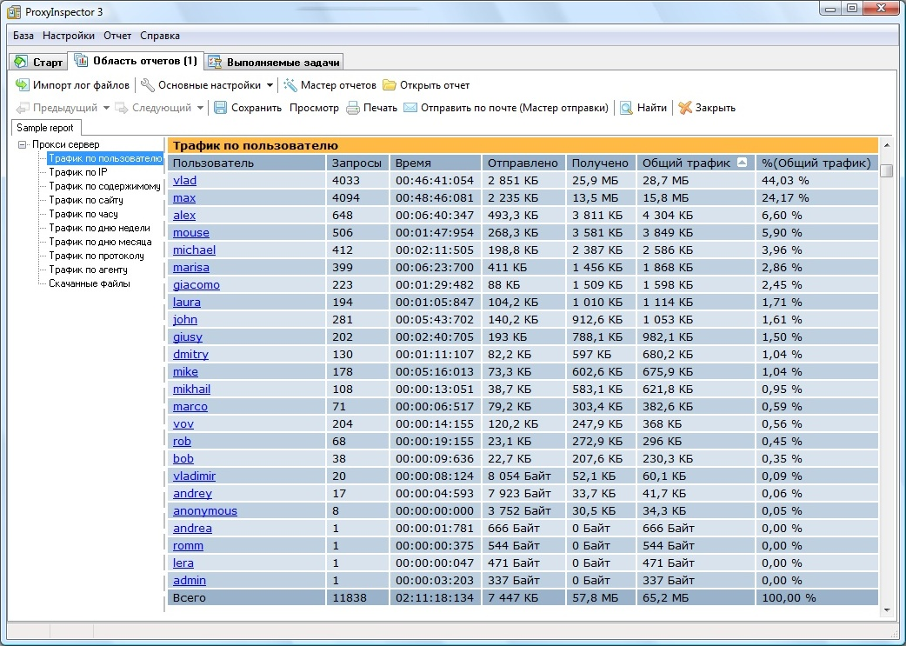

Создание интерактивных пользовательских интерфейсов для систем мониторинга сетевых ресурсов
Что же мы имеем в настоящее время?


Новые технологии
новый стандарт - HTML5
Новые технологии
новый стандарт - HTML5